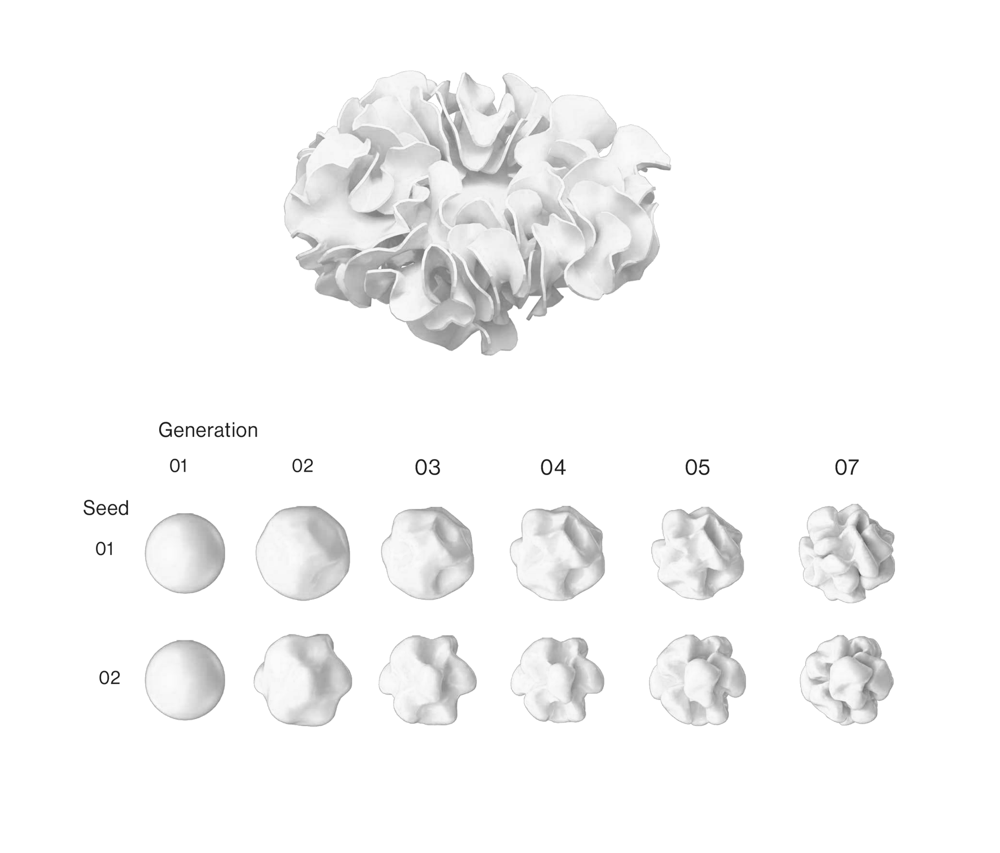

COMPUTER GRAPHICS · COMPUTATIONAL GEOMETRY · SIMULATION
Generating complex organic geometry from simple local growth and repulsion rules.
grasshopper · kangaroo physics
Differential growth is when different parts of an organism grow at varying rates or directions, gradually altering its form.
Using Kangaroo Physics, a physics simulation engine for Grasshopper, this project simulates a similar process on a mesh. Local growth and repulsion rules are applied iteratively to nearby vertices, progressively deforming the surface and producing more complex forms over time.
Changing parameters such as growth rate, repulsion strength and the starting mesh produces different behaviours and forms.
The project is a simple experiment in emergent geometry, where complex forms develop from the repeated interaction of a small set of local rules.
